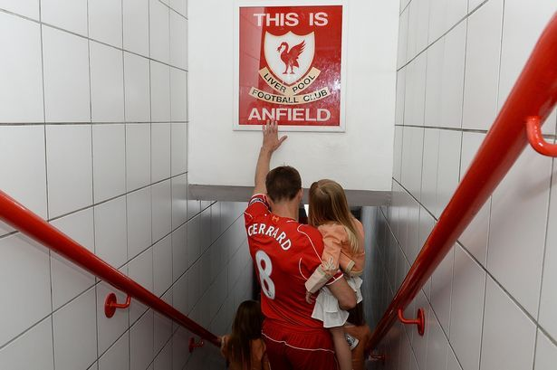
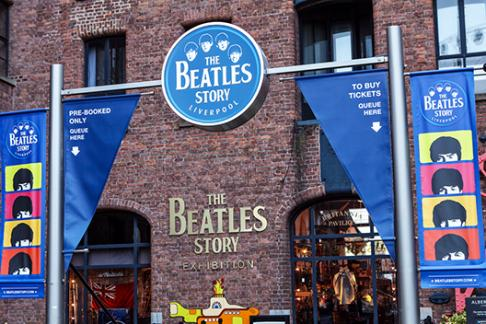
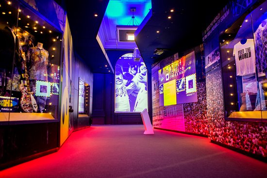

The name of the city of Liverpool is found for the first time when the Count Rogerio de Poitou built a castle in it around 1089, that is to say shortly after the conquest of England by the Normans. Very soon they went to seek protection in the feudal castle some fishermen's cabins.
In 1207, the King of England, Juan Sin Tierra, granted a royal patent to the inhabitants of Liverpool the municipal franchises they enjoyed the other cities on the coast, was therefore declared a port and that is when it is considered that this population was officially founded. Another Letter from 1228,established in it a corporation of merchants and all those who being part of it excluded them from the privilege of trading (making merchandise) unless they did so with permission of the inhabitants. But These privileges had little influence on the growth of the city of Liverpool and so it is that until 1551 they were just a village surrounded by swamps, with a population of around 500 citizens.
During the tour (for free) you will know the history of one of the most important stadiums for English football. You will pass through the tunnel of Anfield that will take you to the field of play where legends like Gerrard, Rush or Neal developed their sports career and formed as great players
In addition, we will visit the Museum of the History of Liverpool FC and Steven Gerrard, collection that the player himself donated to the club and where you can see the T-shirts, medals and trophies of an English legend. After this tour, you will feel that "you'll never walk alone".
Take a tour of the life, music and legacy of the band more famous story in The Beatles Story. You will go into the The world's most comprehensive exposition of the Liverpool Four.
You will enjoy an audio guide in Spanish throughout the visit so that find out all the details about the Beatles. In addition, you will visit a replica of the Cavern Club and you can see original objects of these four liverpool musicians
In addition, you will have access to the Discovery Zone, an area designed for the most children learn the history of the Beatles dynamically and fun. You will find interactive screens and even a giant piano!
Dive into the history of British music at British Music Experience. You will see original articles by the most famous artists relevant in the country, such as Freddy Mercury, Adele, Oasis, the Spice Girls and many more.
Liverpool is the quintessential music city in the UK, and the British Music Experience is the reflection of it. In this exhibition interactive you will find more than six hundred personal items of the most influential British artists of recent decades.
And for the bravest, the museum has several interactive areas where you can demonstrate your acting skills singing, playing an instrument or dancing. Bring out the artist inside you!
This typical dish has a little bit of everything. Includes fried vegetables like cabbage, cooked potatoes, carrots, beans accompanied by meat and pickles. In England it would be a typical breakfast to start the day with energy.
If you want to learn how to prepare it, I leave you a link to know how to do it

Esta comida típica inglesa es un pastel salado muy sencillo, tanto que suele ser un plato de la rutina diaria. Carne picada (de ternera si es el cottage pie y de cordero si es el sheperd’s pie) cubierta de puré de patata. Es una mezcla que posiblemente no podemos probar en otro sitio que no sea Inglaterra.
If you want to learn how to prepare it, I leave you a link to know how to do it
Su nombre se refiere al tipo de carne con el que se elabora este plato típico inglés. Este estofado de ternera que tradicionalmente se hacía con cebolla y pimienta, ahora también puede llevar verduras como las patatas y zanahorias. Cuidado al pedirlo porque… scouse es el nombre que también tiene el dialecto y acento de la ciudad de Liverpool.
If you want to learn how to prepare it, I leave you a link to know how to do it